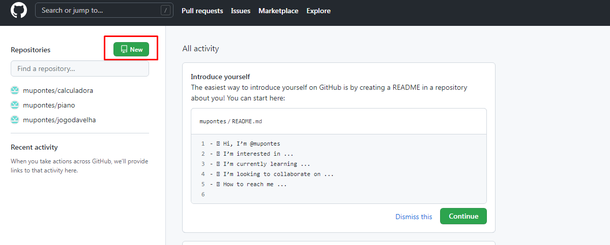
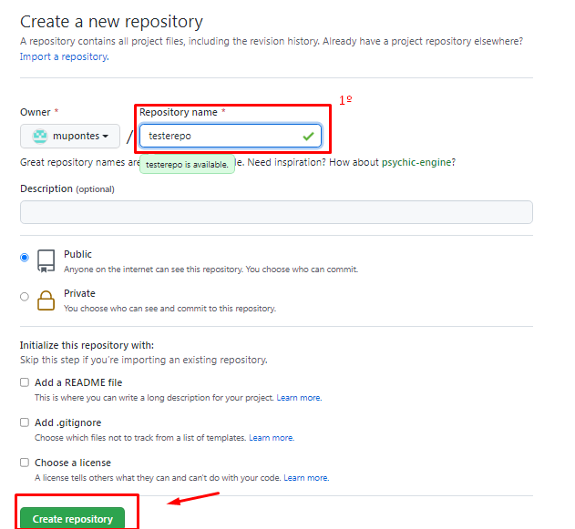
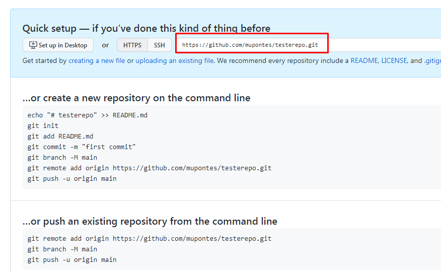
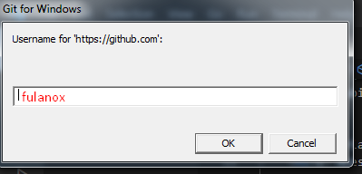

Tutorial
1- Acesse github.com, faça o login com sua conta.
2- Na aba repository, clique em new

3- No campo indicado na imagem, entre com o nome do repositório. Em seguinda clique em Create Repository.

4- Guarde o link https gerado pelo Github como na imagem abaixo.

5- Abra o Git Bash ou terminal na pasta onde está o seu projeto.
6- Digite o seguinte comando abaixo para criar o arquivo README.md
echo "# exemplo de texto no README.md" >> README.md
7- Inicie a pasta como um repositório do Git através do comando:
git init
8- Em seguida, adicione os arquivos de configuração para preparar o commit:
git add .
9- Adicione o arquivo readme criando no passo 6 com o comando:
git add README.md
10- Crie um novo commit para os arquivos que irá subir para o repositório:
git commit -m "Primeiro commit"
11- Suba seus arquivos utilizando a URL gerada no passo 4 no seguinte comando:
git remote add origin URL-GERADA-PELO-PASSO-4-AQUI
12- Autorize o upload com seu login e senha:
git push -u origin master
